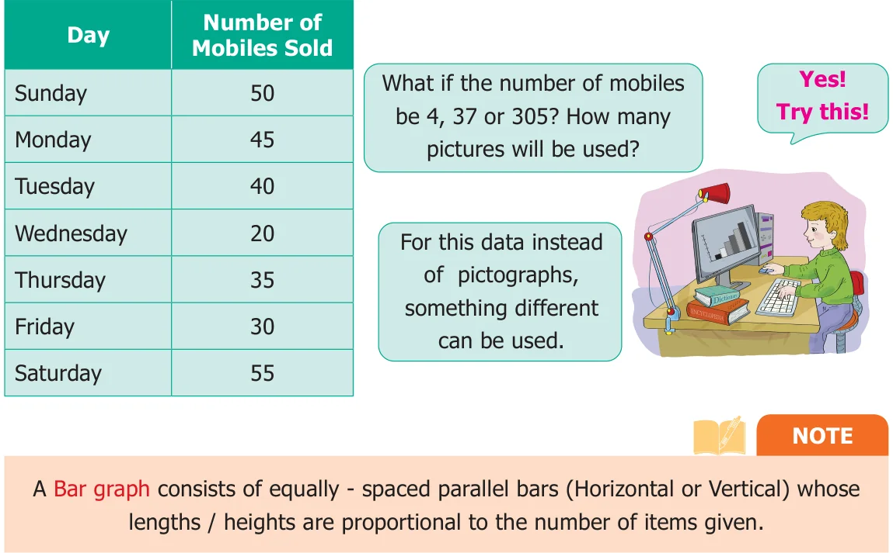
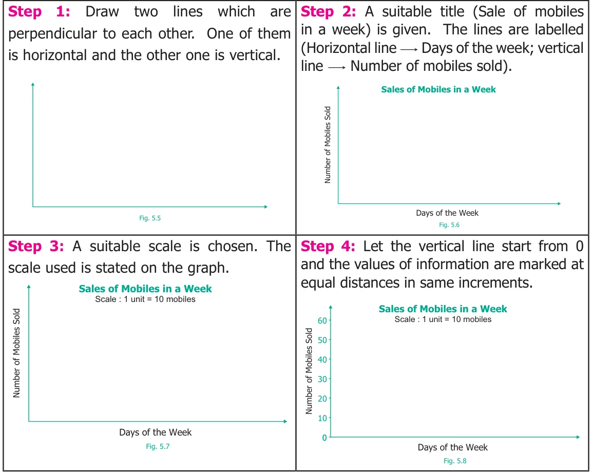
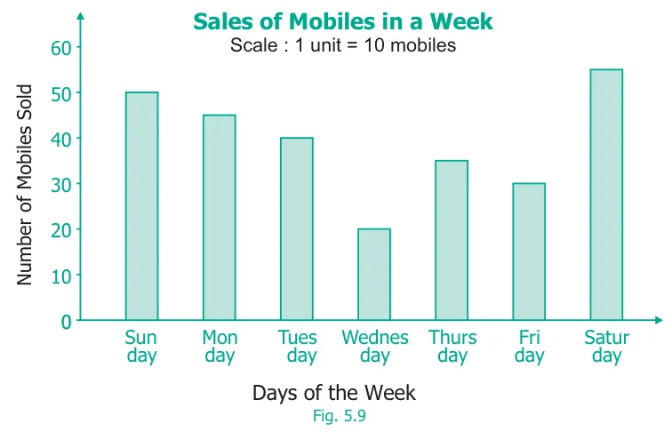
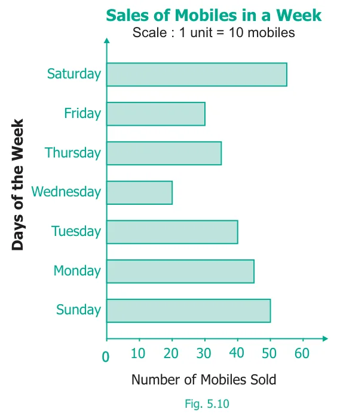
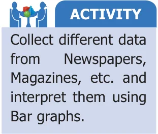
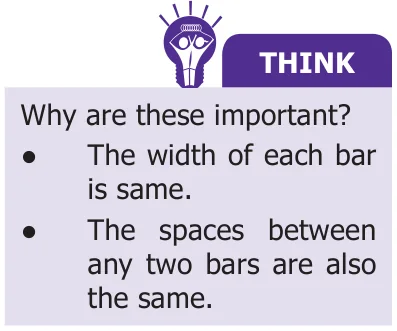
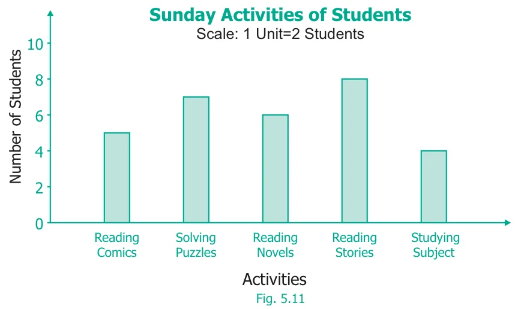
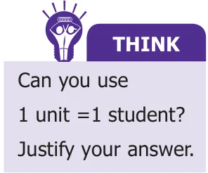

Ragavi's father is a mobile shop owner. She finds the following data of sale of mobiles in a week.

5.4.1 Drawing Bar-Graph

Step 5: For each information vertical bars are drawn on the horizontal line. They are labelled by respective information (as Monday, Tuesday… Sunday).

This graph is called as Vertical Bar Graph.
The corresponding horizontal Bar Graph will look like this:

5.4.2 Interpreting the Bar Graph
The data from the above Bar Graph (Fig. 5.10) can be easily interpreted and analyzed as follows.

- The maximum number of mobiles sold on Saturday (55).
- The minimum number of mobiles sold on Wednesday (20).
- The total number of mobiles sold in the week \((50+45+40+20+35+30+55 = 275)\).
- The number of mobiles sold on a particular day (for example: on Friday is 30, etc.,).
Example 5.3


Study the above Bar graph and answer the following questions.
- Which activity is followed by maximum number of students?
- How many students spend their time on solving puzzles?
- The total number of students who follow either reading stories or reading their subjects is \(\underline{\qquad\qquad}\).
- The activity followed by minimum number of students is \(\underline{\qquad\qquad}\).
- The number of students who took part in reading comics is \(\underline{\qquad\qquad}\).
Solution

- 'Reading stories' is followed by maximum number of students.
- 7 students spend their time to work out solving puzzles.
- \(8 + 4 = 12\) students spend their time on reading stories or subjects.
- 'Studying subject' is followed by minimum number of students.
- 5 students spend their time on reading comics.